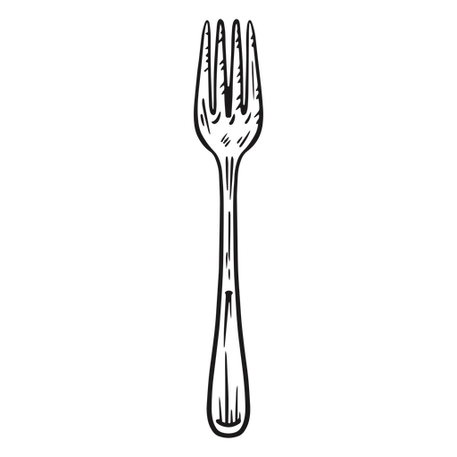

Los cimientos de este mítico edificio Madrid siguió creciendo, a pesar de que a la muerte de Felipe II, su sucesor Felipe III, traslada, solo temporalmente, la Corte a Valladolid. Y es justamente en esta época (concretamente en 1590) cuando tenemos constancia de la existencia del edificio que hoy alberga Botín. Su propietario solicitó el «Privilegio de exención de huéspedes», de cuyo documento consta acreditación. Este impuesto lo pagaban aquellos propietarios de un inmueble de más de una planta que no deseaban albergar en él a miembros de los cortejos reales que llegaban a Madrid y que no se hospedaban ni en Palacio ni en las casas de los nobles.
Un cocinero llamado Jean Botín En 1606, la Corte vuelve a Madrid y en 1620, con la reforma efectuada en la Plaza Mayor (antigua Plaza del Arrabal), la zona se convierte en el principal enclave comercial de la ciudad: zapateros, curtidores, cuchilleros, latoneros, herradores, las calles de la zona adoptaron el nombre de los oficios que en ellas se ejercían: Ribera de Curtidores, Plaza de Herradores y…como no, Calle Cuchilleros. Es en una de estas calles donde estableció su negocio un cocinero francés llamado Jean Botín, que llegó a Madrid junto con su esposa de origen asturiano, con la intención de trabajar para algún noble de la Corte de los Austrias. En 1725, un sobrino de la esposa de Botín, Candido Remis, abrió una pequeña posada en la calle Cuchilleros y realizó una reforma en la planta baja del edificio, cerrando los soportales existentes. De esta obra ha quedado constancia en una piedra de la entrada en la que figura la fecha. De esta fecha data también el horno de leña de la casa, que aún hoy en día sigue atrayendo a los comensales con sus tentadores olores.
